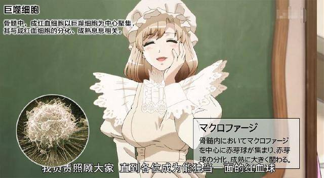
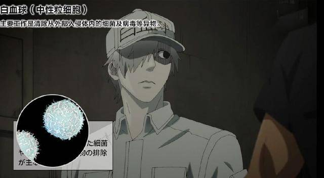
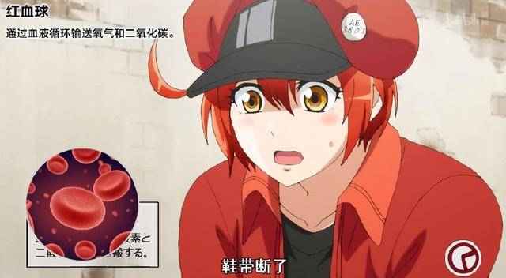
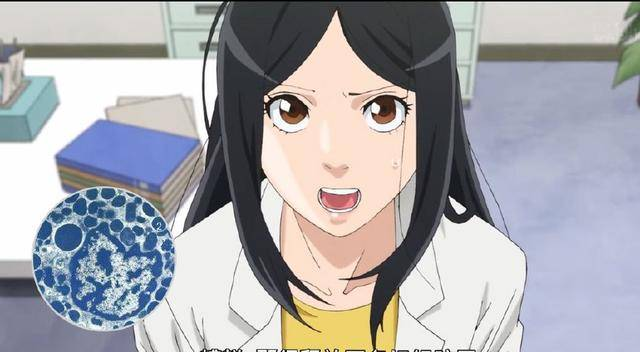
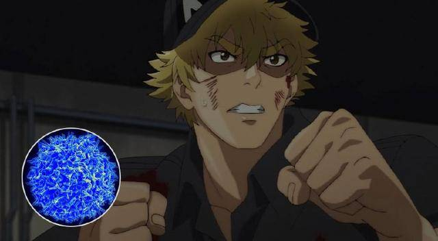

細胞
巨噬細胞
巨噬細胞是一種具多用途多功能的細胞。 作為體內的「清道夫」，它們會去除體內那些壞掉死去的細胞以及其他廢料。它其中有一個重要的功能就是啟動一個免疫反應。

白血球
白血球的功用是保護身體，是人體的防禦機構，故通常被稱為免疫細胞。

紅血球
又稱為紅細胞或血紅細胞，是血液中數量最多的一種血球，同時也是脊椎動物體內通過血液將氧氣從肺或鰓運送到身體各個組織的最主要的媒介。

肥大細胞

t細胞
t細胞可以對產生特殊抗原反應的目標細胞進行殺滅。

癌細胞
癌細胞是導致癌症的根源，嚴重的話甚至會演變成癌症，是相對上需要緊急處理的細胞病變。
血小板
血小板是我們人體中三大主要的血液細胞之一，它主要用來血液凝固與修補作用

小指令 << Previous